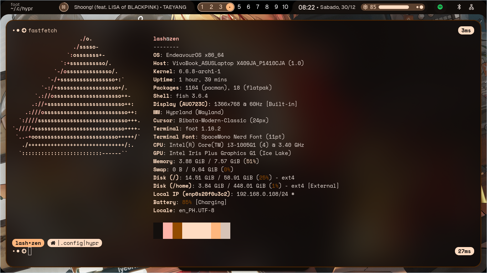

<!DOCTYPE html>
<html lang="en">
  <head>
    <meta charset="UTF-8" />
    <meta name="viewport" content="width=device-width, initial-scale=1.0" />
    <meta name="description" content="Explore by reading..." />
    <meta name="application-name" content="lash (personal)" />
    <meta name="keywords" content="blog article, ph blog, eyelash, lash" />
    <meta name="referrer" content="origin-when-cross-origin" />
    <meta name="creator" content="unknown" />
    <link rel="canonical" href="https://lashmono.space" />
    <link
      rel="alternate"
      hreflang="en-US"
      href="https://lashmono.space/en-US"
    />
    <meta
      name="format-detection"
      content="telephone=no, address=no, email=no"
    />
    <meta property="og:title" content="Design forever?" />
    <meta property="og:description" content="Explore by reading..." />
    <meta property="og:url" content="https://lashmono.space" />
    <meta property="og:site_name" content="lash - stories" />
    <meta
      property="og:image"
      content="https://lashmono.space/async/prod/akame-seo-pt2.webp"
    />
    <meta property="og:image:width" content="1200" />
    <meta property="og:image:height" content="630" />
    <meta name="twitter:card" content="summary_large_image" />
    <meta name="twitter:title" content="Design forever?" />
    <meta name="twitter:description" content="Explore by reading..." />
    <meta
      name="twitter:image"
      content="https://lashmono.space/async/prod/akame-seo-pt2.webp"
    />
    <link rel="preconnect" href="https://fonts.googleapis.com" />
    <link rel="preconnect" href="https://fonts.gstatic.com" crossorigin />
    <link
      href="https://fonts.googleapis.com/css2?family=Outfit:wght@400;800&display=swap"
      rel="stylesheet"
    />
    <link
      rel="stylesheet"
      href="https://cdnjs.cloudflare.com/ajax/libs/font-awesome/6.4.2/css/all.min.css"
      integrity="sha512-z3gLpd7yknf1YoNbCzqRKc4qyor8gaKU1qmn+CShxbuBusANI9QpRohGBreCFkKxLhei6S9CQXFEbbKuqLg0DA=="
      crossorigin="anonymous"
      referrerpolicy="no-referrer"
    />
    <link
      href="https://unpkg.com/boxicons@2.1.4/css/boxicons.min.css"
      rel="stylesheet"
    />
    <link rel="stylesheet" type="text/css" href="../../src/mono/art.css" />
    <script src="../../_poly.js" type="module"></script>
    <script async src="https://platform.twitter.com/widgets.js" charset="utf-8"></script> 
    <title>Design forever?</title>
  </head>
  <body>
    <div class="scrollbtn" id="scrollTop">
      <i class="fas fa-arrow-up"></i>
    </div>
    <header class="lash-nav-contain">
      <div class="lash-parent">
        <div class="lash-logo"></div>
        <div class="lash-toggle" id="colorToggle">
          <i class="fa-regular fa-sun"></i>
        </div>
      </div>
    </header>
    <aside class="article-banner">
      
    </aside>
    <main class="article-container">
      <aside class="article-parent">
        <article class="lash-article-body">
          <!-- sponsored by niggachad -->
          <noscript>
            <div class="lash-noscript">
              
              <header>
                Wait bitch I ask you so what makes you think that you can find
                some non-javascript websites?
              </header>
              <figcaption>
                Stop being delusional you're just feeding your ass in disbeliefs
                that will never be.
              </figcaption>
            </div>
          </noscript>
          <figure class="lash-min-read">1 min read</figure>
          <header class="lash-article-header">It's more fun for being just a hopper</header>
          <figcaption>
           So i don't care that this would be a final day of remaining year therefore, I just want to share           my unbelievable experience to learn in such a linux thing there's different window tiling manager named Hyprland so first of all what the fuck is this? 
          </figcaption>
          <figcaption>
            So yeah, let me introduce to you a Hyprland, basically Hyprland is an wayland compositor that you might actually thinking what's the major difference of this compositor compared to i3 and sway so probably when you see my device information:          
          </figcaption>
          <picture>
            
          <span class="media-info">Fastfetch - No Lies just fast facts</span>
          </picture>
          <figcaption>
            As you can see, there's no sway in my WM output which it tells correctly that sway and hyprland is not the same period.          
          </figcaption>
          <figcaption>
            In my case, I really admire my setup now I think this is my future desktop but I had to think about the missing features like my screen sharing here is not totally stable to me in terms of gaming I can play PS2 so I don't want to engage with triple-A game design again in order to survive. 
          </figcaption>
          <figcaption>
            I am using EndeavorOS instead of Debian because of skill issue haha I had an article 2 months ago which includes my linux experience i'm still thankful that my learning outcome from ubuntu + debian is still using as of this point I really like it.
          </figcaption>
          <figcaption>
            I really like Hyprland except for the community lol I know this doesn't make sense I don't care.          </figcaption>
          <blockquote class="twitter-tweet">
            <p lang="en" dir="ltr">them, praying for prosperity and their personal improvement for 2024<br><br>me, meanwhile: just enjoying hyprland 
              <a href="https://t.co/xosSB5hhD7">pic.twitter.com/xosSB5hhD7</a></p>&mdash; lash (GOODBOY) (@lash_ux) <a href="https://twitter.com/lash_ux/status/1739239796718080095?ref_src=twsrc%5Etfw">December 25, 2023</a>
          </blockquote>
          <figcaption>
            In terms of the IDE I am using NVChad plugin available to Neovim I like it because it follows my design that's it for this article.
          </figcaption>
        </article>
      </aside>
      <footer class="after-reading">
        <figure>Enjoyed reading?</figure>
        <figcaption>
          Is it that so? you might not need to follow me on twitter stranger!
          just explore more articles here if you wanted to learn more things
          that I only know lol.
        </figcaption>
      </footer>
    </main>
    <script src="../separate.js"></script>
  </body>
</html>
